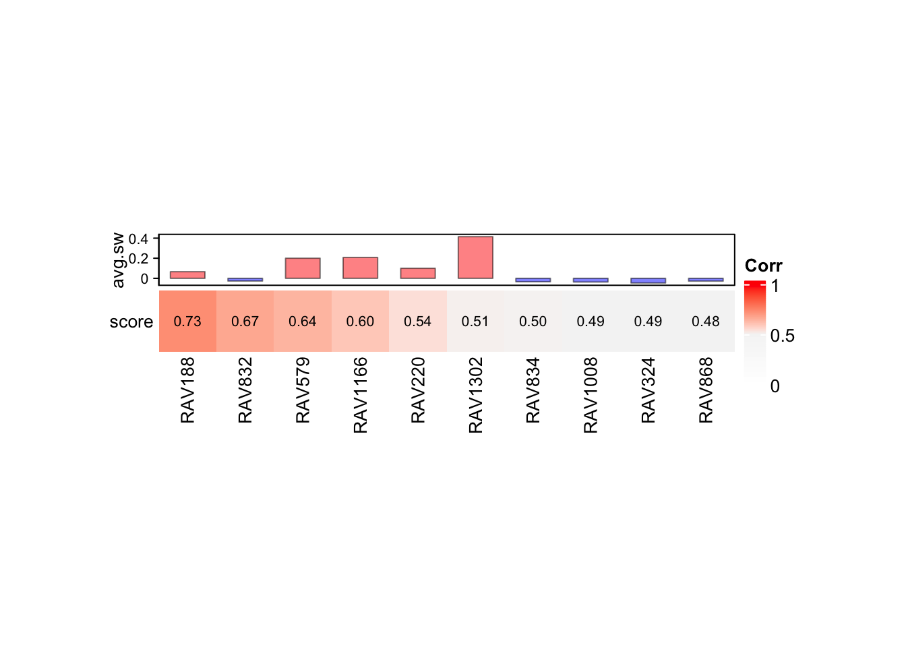
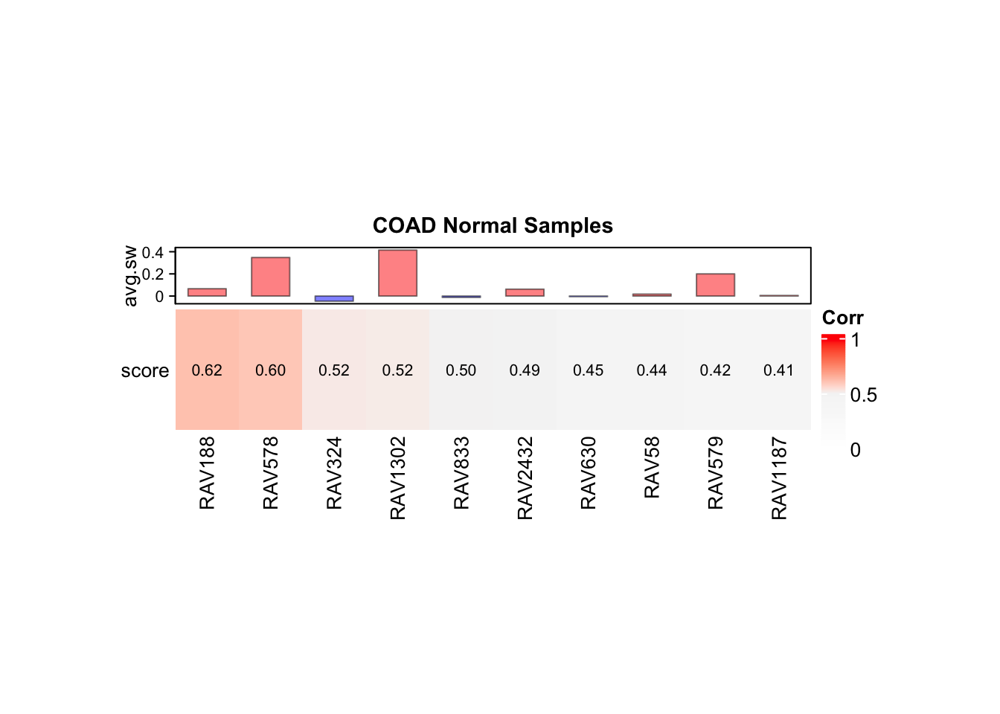
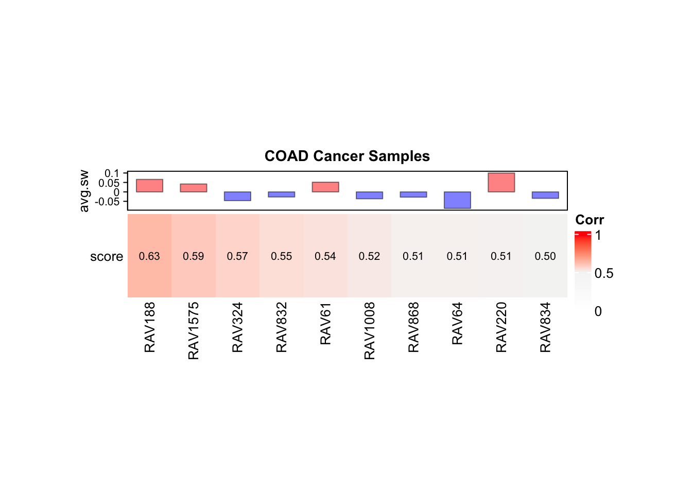
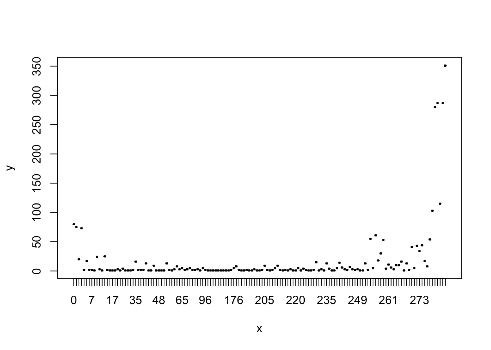
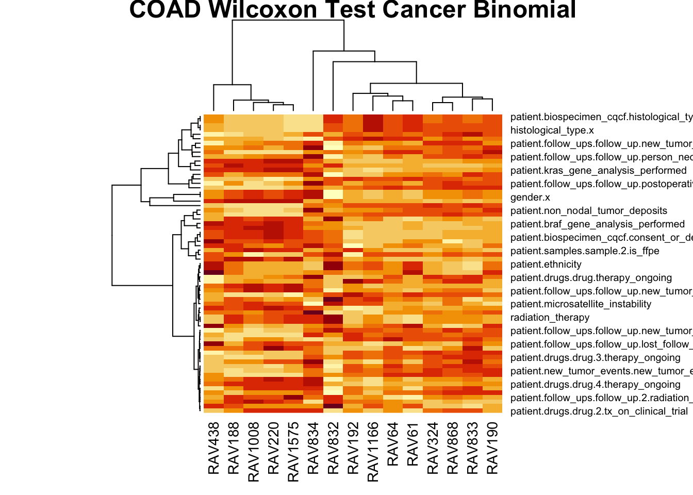
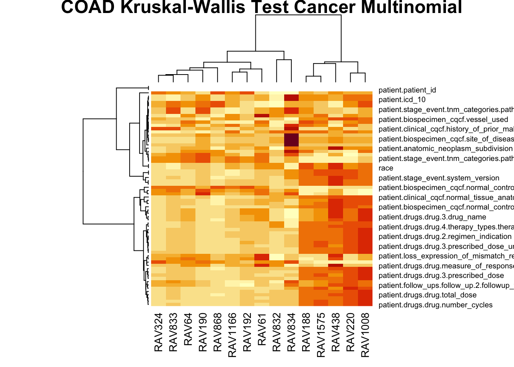
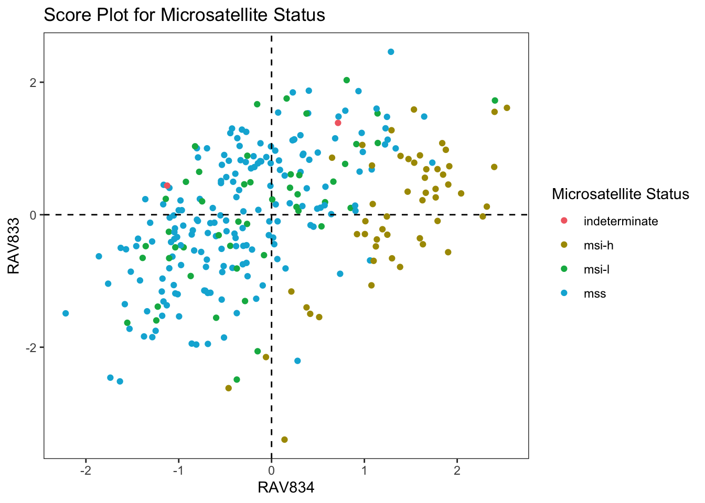
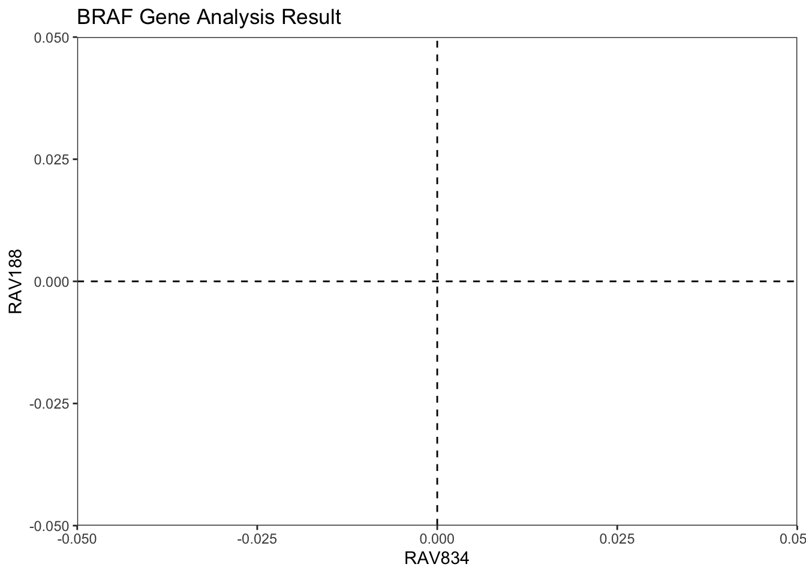
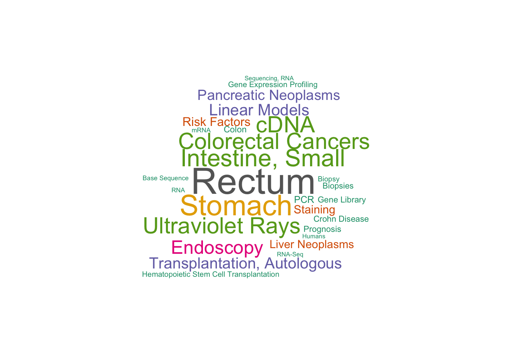

suppressPackageStartupMessages({
# BiocManager
library(GenomicSuperSignature)
library(curatedTCGAData)
library(MultiAssayExperiment)
library(TCGAutils)
library(ComplexHeatmap)
# CRAN
library(tidyverse) # includes dplyr, ggplot2, magrittr, tidyr
library(magick)
library(wordcloud)
library(ztable)
library(metafolio)
})TCGA COAD Microsatellite Status EDA
Initial Setup
Load packages
Load RAVmodel
RAVmodel <- getModel('C2', load=TRUE)[1] "downloading"Select COAD RNA metadata
coad <- curatedTCGAData(diseaseCode = 'COAD',
assays = 'RNA*',
version = '2.0.1',
dry.run = FALSE)
coad_rna <- getWithColData(coad,
'COAD_RNASeq2Gene-20160128')
assay(coad_rna) <- log2(assay(coad_rna) + 1)
table(coad$patient.microsatellite_instability_test_results.microsatellite_instability_test_result.mononucleotide_and_dinucleotide_marker_panel_analysis_status)
indeterminate msi-h msi-l mss
2 83 82 288 ## Parse out cancer vs normal samples
sampleTables(coad)$`COAD_RNASeq2Gene-20160128`
01 02 06 11
283 1 1 41
$`COAD_RNASeq2GeneNorm_illuminaga-20160128`
01
191
$`COAD_RNASeq2GeneNorm_illuminahiseq-20160128`
01 02 06 11
283 1 1 41
$`COAD_RNASeqGene-20160128`
01
10 coad2 <- TCGAsplitAssays(coad, c("01", "11"))
coad_rna_cancer <- getWithColData(coad2,
'01_COAD_RNASeq2Gene-20160128')
assay(coad_rna_cancer) <- log2(assay(coad_rna_cancer) + 1)
coad_cancer <- colData(coad_rna_cancer)
coad_rna_normal <- getWithColData(coad2,
'11_COAD_RNASeq2Gene-20160128')
assay(coad_rna_normal) <- log2(assay(coad_rna_normal) + 1)
coad_normal <- colData(coad_rna_normal)
# Checking if normal and cancer samples have different MSI status
normal_tb <- coad_normal %>%
as.data.frame() %>%
dplyr::select(patientID, patient.microsatellite_instability_test_results.microsatellite_instability_test_result.mononucleotide_and_dinucleotide_marker_panel_analysis_status)
cancer_tb <- coad_cancer %>%
as.data.frame() %>%
dplyr::select(patientID, patient.microsatellite_instability_test_results.microsatellite_instability_test_result.mononucleotide_and_dinucleotide_marker_panel_analysis_status)
combined_tb <- inner_join(normal_tb, cancer_tb, by="patientID") # All paired cancer and normal samples have the same MSI status
#Because they are the same, we will only use the cancer (independent) samplesheatmapTable: COAD
validate_coad_rna <- validate(coad_rna, RAVmodel)
validate_coad_normal <- validate(coad_rna_normal, RAVmodel)
validate_coad_cancer <- validate(coad_rna_cancer, RAVmodel)
heatmapTable(validate_coad_rna, RAVmodel, num.out = 10)
heatmapTable(validate_coad_normal, RAVmodel, num.out = 10, column_title="COAD Normal Samples")RAV1187 can be filtered based on GSEA_C2heatmapTable(validate_coad_cancer, RAVmodel, num.out=10, column_title="COAD Cancer Samples")RAV61 can be filtered based on GSEA_C2


Subset
Filter attributes
# Cancer
sparsity_summary <- table(colSums(is.na(coad_cancer)))
#sparsity_summarySparsity Plot
# Cancer
plot(stack(sparsity_summary)$ind,
stack(sparsity_summary)$values)
# Select columns with >10% completeness
# Cancer
keep_attribute_ind <- which(colSums(!is.na(coad_cancer)) > round(nrow(coad_cancer)/10))
meta_subset <- coad_cancer[keep_attribute_ind] %>% subset(select= -patientID)# Randomly select for 140 rows
# set.seed(1)
# random_sample_ind <- sample(1:nrow(meta_sub1), 140)
# meta_sub2 <- meta_sub1[random_sample_ind,]# Check for data types in listData
unique(sapply(coad_cancer@listData, type))[1] "character" "integer" "double" charcTb <- meta_subset[, sapply(meta_subset, class) == 'character']
numTb <- meta_subset[, sapply(meta_subset, class) %in% c('numeric', 'integer')]
# View numeric variables that have <=4 unique values to determine if they should be converted to character variables
addToFactors <- c()
for (i in 1:length(numTb)) {
if (length(table(numTb[i])) <= 4) {
addToFactors <- c(addToFactors, i)
}
}
charcTb <- c(charcTb, numTb[addToFactors])
numTb <- numTb[-addToFactors]# Calculate validation scores
sampleScore <- calculateScore(coad_rna_cancer, RAVmodel)
validated_ind <- validatedSignatures(validate_coad_cancer, RAVmodel, num.out = 15, scoreCutoff = 0.45, indexOnly = TRUE) #Using Pearson CoefficientRAV61 can be filtered based on GSEA_C2RAV438 can be filtered based on GSEA_C2## Subset sampleScore to join with MCPcounter
sampleScore_sub <- sampleScore[, validated_ind] %>% as.data.frame()Separate out Factor Variables by number of levels (1, 2, 3+) not including NA
# Convert to factor data type
factorTb <- meta_subset[, sapply(meta_subset, class) == 'character']
#factorTb <- charcTb
factorTb[sapply(factorTb, is.character)] <- lapply(factorTb[sapply(factorTb, is.character)], factor, exclude = NULL)
#any(is.na(levels(factorTb[,2])))
single_factor_ind <- c()
binary_factor_ind <- c()
multi_factor_ind <- c()
# Testing factor grouping
for (i in 1:length(factorTb)) {
if (nlevels(factorTb[,i]) == 1 |
(nlevels(factorTb[,i]) == 2 & any(is.na(levels(factorTb[,i]))))
) {
single_factor_ind <- c(single_factor_ind, i)
} else if (nlevels(factorTb[,i]) == 3 & any(is.na(levels(factorTb[,i]))) |
(nlevels(factorTb[,i]) == 2 & !any(is.na(levels(factorTb[,i]))))
) {
binary_factor_ind <- c(binary_factor_ind, i)
} else {
multi_factor_ind <- c(multi_factor_ind, i)
}
}
new_factorTb <- factorTb[,multi_factor_ind]
binary_factor <- factorTb[,binary_factor_ind]
single_factor <- factorTb[,single_factor_ind]Calculate Wilcoxon Test for Binomial Factor Variables
#Remove factors without enough y-observations
remove_index <- c()
for (i in seq_len(ncol(binary_factor))) {
x <- summary(binary_factor[,i])[1:2]
if (all(x > 1)) {
#print(x)
} else {
remove_index <- c(remove_index, i)
#print(paste("index", i, "does not have enough observations"))
}
}
binary_factor_2 <- binary_factor[,-remove_index]wilcox_test_res <- as.data.frame(matrix(nrow = ncol(binary_factor_2),
ncol = ncol(sampleScore_sub)))
rownames(wilcox_test_res) <- colnames(binary_factor_2)
colnames(wilcox_test_res) <- colnames(sampleScore_sub)
wtest_coad_wvalue <- wilcox_test_res
wtest_coad_pvalue <- wilcox_test_res
for (i in seq_len(ncol(sampleScore_sub))) {
for (j in seq_len(ncol(binary_factor_2))) {
## wilcoxon test
wilcox_test <- wilcox.test(sampleScore_sub[, i] ~ binary_factor_2[,j], alternative="two.sided")
## W value
wval <- wilcox_test$statistic
wtest_coad_wvalue[j, i] <- wval
## p-value
pval <- wilcox_test$p.value
wtest_coad_pvalue[j, i] <- pval
}
}
batch_char_ind <- grep('analyte|analytes|portion|procurement|aliquot|uuid|barcode',
rownames(wtest_coad_wvalue))
wtest_coad_wvalue_2 <- wtest_coad_wvalue[-batch_char_ind,]
wtest_coad_pvalue_2 <- wtest_coad_pvalue[-batch_char_ind,]heatmap(as.matrix(wtest_coad_wvalue_2), main = 'COAD Wilcoxon Test Cancer Binomial')
#Only view w-values with significant p-value (<0.05)
wtest_coad_sig_wvalue <- wilcox_test_res
for (i in seq_len(ncol(sampleScore_sub))) {
for (j in seq_len(ncol(binary_factor_2))) {
if (wilcox.test(sampleScore_sub[, i] ~ binary_factor_2[,j], alternative="two.sided")$p.val < 0.05) {
wtest_coad_sig_wvalue[j, i] <- wilcox.test(sampleScore_sub[, i] ~ binary_factor_2[,j],
alternative="two.sided")$statistic
}
}
}
na_ind <- apply(wtest_coad_sig_wvalue, 1, function(x) all(is.na(x)))
wtest_coad_sig_wvalue <- wtest_coad_sig_wvalue[!na_ind, ]
batch_char_ind_2 <- grep('analyte|analytes|portion|procurement|aliquot|uuid|barcode',
rownames(wtest_coad_sig_wvalue))
wtest_coad_sig_wvalue <- wtest_coad_sig_wvalue[-batch_char_ind_2, ]for (i in seq_len(ncol(sampleScore_sub))) {
print(colnames(sampleScore_sub)[i])
xy <- wilcox.test(sampleScore_sub[,i] ~ binary_factor_2[,"patient.samples.sample.3.sample_type"], exact = FALSE)
print(xy)
}[1] "RAV188"
Wilcoxon rank sum test with continuity correction
data: sampleScore_sub[, i] by binary_factor_2[, "patient.samples.sample.3.sample_type"]
W = 50, p-value = 0.02926
alternative hypothesis: true location shift is not equal to 0
[1] "RAV1575"
Wilcoxon rank sum test with continuity correction
data: sampleScore_sub[, i] by binary_factor_2[, "patient.samples.sample.3.sample_type"]
W = 58, p-value = 0.06871
alternative hypothesis: true location shift is not equal to 0
[1] "RAV324"
Wilcoxon rank sum test with continuity correction
data: sampleScore_sub[, i] by binary_factor_2[, "patient.samples.sample.3.sample_type"]
W = 143, p-value = 0.05056
alternative hypothesis: true location shift is not equal to 0
[1] "RAV832"
Wilcoxon rank sum test with continuity correction
data: sampleScore_sub[, i] by binary_factor_2[, "patient.samples.sample.3.sample_type"]
W = 94, p-value = 0.8397
alternative hypothesis: true location shift is not equal to 0
[1] "RAV61"
Wilcoxon rank sum test with continuity correction
data: sampleScore_sub[, i] by binary_factor_2[, "patient.samples.sample.3.sample_type"]
W = 145, p-value = 0.04085
alternative hypothesis: true location shift is not equal to 0
[1] "RAV1008"
Wilcoxon rank sum test with continuity correction
data: sampleScore_sub[, i] by binary_factor_2[, "patient.samples.sample.3.sample_type"]
W = 51, p-value = 0.03276
alternative hypothesis: true location shift is not equal to 0
[1] "RAV868"
Wilcoxon rank sum test with continuity correction
data: sampleScore_sub[, i] by binary_factor_2[, "patient.samples.sample.3.sample_type"]
W = 135, p-value = 0.1106
alternative hypothesis: true location shift is not equal to 0
[1] "RAV64"
Wilcoxon rank sum test with continuity correction
data: sampleScore_sub[, i] by binary_factor_2[, "patient.samples.sample.3.sample_type"]
W = 145, p-value = 0.04085
alternative hypothesis: true location shift is not equal to 0
[1] "RAV220"
Wilcoxon rank sum test with continuity correction
data: sampleScore_sub[, i] by binary_factor_2[, "patient.samples.sample.3.sample_type"]
W = 56, p-value = 0.0561
alternative hypothesis: true location shift is not equal to 0
[1] "RAV834"
Wilcoxon rank sum test with continuity correction
data: sampleScore_sub[, i] by binary_factor_2[, "patient.samples.sample.3.sample_type"]
W = 110, p-value = 0.637
alternative hypothesis: true location shift is not equal to 0
[1] "RAV833"
Wilcoxon rank sum test with continuity correction
data: sampleScore_sub[, i] by binary_factor_2[, "patient.samples.sample.3.sample_type"]
W = 136, p-value = 0.1009
alternative hypothesis: true location shift is not equal to 0
[1] "RAV438"
Wilcoxon rank sum test with continuity correction
data: sampleScore_sub[, i] by binary_factor_2[, "patient.samples.sample.3.sample_type"]
W = 98, p-value = 0.9821
alternative hypothesis: true location shift is not equal to 0
[1] "RAV190"
Wilcoxon rank sum test with continuity correction
data: sampleScore_sub[, i] by binary_factor_2[, "patient.samples.sample.3.sample_type"]
W = 150, p-value = 0.02322
alternative hypothesis: true location shift is not equal to 0
[1] "RAV1166"
Wilcoxon rank sum test with continuity correction
data: sampleScore_sub[, i] by binary_factor_2[, "patient.samples.sample.3.sample_type"]
W = 124, p-value = 0.2708
alternative hypothesis: true location shift is not equal to 0
[1] "RAV192"
Wilcoxon rank sum test with continuity correction
data: sampleScore_sub[, i] by binary_factor_2[, "patient.samples.sample.3.sample_type"]
W = 119, p-value = 0.3808
alternative hypothesis: true location shift is not equal to 0options(ztable.type='html')
ztable(wtest_coad_sig_wvalue) %>%
makeHeatmap(palette = 'Blues') %>%
print(caption='Cancer Sample W-test with p-values < 0.05')| RAV188 | RAV1575 | RAV324 | RAV832 | RAV61 | RAV1008 | RAV868 | RAV64 | RAV220 | RAV834 | RAV833 | RAV438 | RAV190 | RAV1166 | RAV192 | |
|---|---|---|---|---|---|---|---|---|---|---|---|---|---|---|---|
| gender.x | 8550.00 | ||||||||||||||
Calculate Kruskal-Wallis Test for Multinomial Factor Variables
kruskal_wallis_res <- as.data.frame(matrix(nrow = ncol(new_factorTb),
ncol = ncol(sampleScore_sub)))
rownames(kruskal_wallis_res) <- colnames(new_factorTb)
colnames(kruskal_wallis_res) <- colnames(sampleScore_sub)
kwtest_coad_wvalue <- kruskal_wallis_res
kwtest_coad_pvalue <- kruskal_wallis_res
for (i in seq_len(ncol(sampleScore_sub))) {
for (j in seq_len(ncol(new_factorTb))) {
## Kruskal-Wallis Test
kruskal_test <- kruskal.test(sampleScore_sub[, i] ~ new_factorTb[,j])
## Kruskal-Wallis Chi-squared value
kw_val <- kruskal_test$statistic
kwtest_coad_wvalue[j, i] <- kw_val
## p-value
pval <- kruskal_test$p.value
kwtest_coad_pvalue[j, i] <- pval
}
}
batch_char_ind <- grep('analyte|analytes|portion|procurement|aliquot|uuid|barcode',
rownames(kwtest_coad_wvalue))
kwtest_coad_wvalue <- kwtest_coad_wvalue[-batch_char_ind,]
kwtest_coad_pvalue <- kwtest_coad_pvalue[-batch_char_ind,]for (i in seq_len(ncol(sampleScore_sub))) {
print(colnames(sampleScore_sub)[i])
xy <- pairwise.wilcox.test(sampleScore_sub[, i], new_factorTb[,"patient.microsatellite_instability_test_results.microsatellite_instability_test_result.mononucleotide_and_dinucleotide_marker_panel_analysis_status"], p.adjust.method = "bonferroni")
print(xy)
}[1] "RAV188"
Pairwise comparisons using Wilcoxon rank sum test with continuity correction
data: sampleScore_sub[, i] and new_factorTb[, "patient.microsatellite_instability_test_results.microsatellite_instability_test_result.mononucleotide_and_dinucleotide_marker_panel_analysis_status"]
indeterminate msi-h msi-l
msi-h 0.16 - -
msi-l 0.20 1.00 -
mss 0.20 1.00 1.00
P value adjustment method: bonferroni
[1] "RAV1575"
Pairwise comparisons using Wilcoxon rank sum test with continuity correction
data: sampleScore_sub[, i] and new_factorTb[, "patient.microsatellite_instability_test_results.microsatellite_instability_test_result.mononucleotide_and_dinucleotide_marker_panel_analysis_status"]
indeterminate msi-h msi-l
msi-h 0.20 - -
msi-l 0.48 1.00 -
mss 0.25 1.00 1.00
P value adjustment method: bonferroni
[1] "RAV324"
Pairwise comparisons using Wilcoxon rank sum test with continuity correction
data: sampleScore_sub[, i] and new_factorTb[, "patient.microsatellite_instability_test_results.microsatellite_instability_test_result.mononucleotide_and_dinucleotide_marker_panel_analysis_status"]
indeterminate msi-h msi-l
msi-h 1 - -
msi-l 1 1 -
mss 1 1 1
P value adjustment method: bonferroni
[1] "RAV832"
Pairwise comparisons using Wilcoxon rank sum test with continuity correction
data: sampleScore_sub[, i] and new_factorTb[, "patient.microsatellite_instability_test_results.microsatellite_instability_test_result.mononucleotide_and_dinucleotide_marker_panel_analysis_status"]
indeterminate msi-h msi-l
msi-h 0.89 - -
msi-l 1.00 1.00 -
mss 1.00 0.99 1.00
P value adjustment method: bonferroni
[1] "RAV61"
Pairwise comparisons using Wilcoxon rank sum test with continuity correction
data: sampleScore_sub[, i] and new_factorTb[, "patient.microsatellite_instability_test_results.microsatellite_instability_test_result.mononucleotide_and_dinucleotide_marker_panel_analysis_status"]
indeterminate msi-h msi-l
msi-h 0.28 - -
msi-l 0.16 1.00 -
mss 0.24 1.00 1.00
P value adjustment method: bonferroni
[1] "RAV1008"
Pairwise comparisons using Wilcoxon rank sum test with continuity correction
data: sampleScore_sub[, i] and new_factorTb[, "patient.microsatellite_instability_test_results.microsatellite_instability_test_result.mononucleotide_and_dinucleotide_marker_panel_analysis_status"]
indeterminate msi-h msi-l
msi-h 0.82 - -
msi-l 0.71 1.00 -
mss 0.39 0.25 1.00
P value adjustment method: bonferroni
[1] "RAV868"
Pairwise comparisons using Wilcoxon rank sum test with continuity correction
data: sampleScore_sub[, i] and new_factorTb[, "patient.microsatellite_instability_test_results.microsatellite_instability_test_result.mononucleotide_and_dinucleotide_marker_panel_analysis_status"]
indeterminate msi-h msi-l
msi-h 1 - -
msi-l 1 1 -
mss 1 1 1
P value adjustment method: bonferroni
[1] "RAV64"
Pairwise comparisons using Wilcoxon rank sum test with continuity correction
data: sampleScore_sub[, i] and new_factorTb[, "patient.microsatellite_instability_test_results.microsatellite_instability_test_result.mononucleotide_and_dinucleotide_marker_panel_analysis_status"]
indeterminate msi-h msi-l
msi-h 0.25 - -
msi-l 0.63 1.00 -
mss 0.32 1.00 1.00
P value adjustment method: bonferroni
[1] "RAV220"
Pairwise comparisons using Wilcoxon rank sum test with continuity correction
data: sampleScore_sub[, i] and new_factorTb[, "patient.microsatellite_instability_test_results.microsatellite_instability_test_result.mononucleotide_and_dinucleotide_marker_panel_analysis_status"]
indeterminate msi-h msi-l
msi-h 0.25 - -
msi-l 0.63 1.00 -
mss 0.27 1.00 1.00
P value adjustment method: bonferroni
[1] "RAV834"
Pairwise comparisons using Wilcoxon rank sum test with continuity correction
data: sampleScore_sub[, i] and new_factorTb[, "patient.microsatellite_instability_test_results.microsatellite_instability_test_result.mononucleotide_and_dinucleotide_marker_panel_analysis_status"]
indeterminate msi-h msi-l
msi-h 0.28 - -
msi-l 1.00 1.3e-12 -
mss 1.00 < 2e-16 1.00
P value adjustment method: bonferroni
[1] "RAV833"
Pairwise comparisons using Wilcoxon rank sum test with continuity correction
data: sampleScore_sub[, i] and new_factorTb[, "patient.microsatellite_instability_test_results.microsatellite_instability_test_result.mononucleotide_and_dinucleotide_marker_panel_analysis_status"]
indeterminate msi-h msi-l
msi-h 1.00 - -
msi-l 1.00 1.00 -
mss 0.94 1.00 1.00
P value adjustment method: bonferroni
[1] "RAV438"
Pairwise comparisons using Wilcoxon rank sum test with continuity correction
data: sampleScore_sub[, i] and new_factorTb[, "patient.microsatellite_instability_test_results.microsatellite_instability_test_result.mononucleotide_and_dinucleotide_marker_panel_analysis_status"]
indeterminate msi-h msi-l
msi-h 1 - -
msi-l 1 1 -
mss 1 1 1
P value adjustment method: bonferroni
[1] "RAV190"
Pairwise comparisons using Wilcoxon rank sum test with continuity correction
data: sampleScore_sub[, i] and new_factorTb[, "patient.microsatellite_instability_test_results.microsatellite_instability_test_result.mononucleotide_and_dinucleotide_marker_panel_analysis_status"]
indeterminate msi-h msi-l
msi-h 1.0000 - -
msi-l 0.7053 0.1356 -
mss 0.5525 0.0047 1.0000
P value adjustment method: bonferroni
[1] "RAV1166"
Pairwise comparisons using Wilcoxon rank sum test with continuity correction
data: sampleScore_sub[, i] and new_factorTb[, "patient.microsatellite_instability_test_results.microsatellite_instability_test_result.mononucleotide_and_dinucleotide_marker_panel_analysis_status"]
indeterminate msi-h msi-l
msi-h 0.223 - -
msi-l 1.000 0.111 -
mss 1.000 0.009 1.000
P value adjustment method: bonferroni
[1] "RAV192"
Pairwise comparisons using Wilcoxon rank sum test with continuity correction
data: sampleScore_sub[, i] and new_factorTb[, "patient.microsatellite_instability_test_results.microsatellite_instability_test_result.mononucleotide_and_dinucleotide_marker_panel_analysis_status"]
indeterminate msi-h msi-l
msi-h 0.382 - -
msi-l 1.000 0.408 -
mss 1.000 0.098 1.000
P value adjustment method: bonferroni heatmap(as.matrix(kwtest_coad_wvalue), main = 'COAD Kruskal-Wallis Test Cancer Multinomial')
#Only view kw-values with significant p-value (<0.01)
kwtest_coad_sig_wvalue <- kruskal_wallis_res
for (i in seq_len(ncol(sampleScore_sub))) {
for (j in seq_len(ncol(new_factorTb))) {
if (kruskal.test(sampleScore_sub[, i] ~ new_factorTb[,j])$p.value < 0.01) {
kwtest_coad_sig_wvalue[j, i] <- kruskal.test(sampleScore_sub[, i] ~ new_factorTb[,j])$statistic
}
}
}
batch_char_ind <- grep('analyte|analytes|portion|procurement|aliquot|uuid|barcode',
rownames(kwtest_coad_sig_wvalue))
kwtest_coad_sig_wvalue <- kwtest_coad_sig_wvalue[-batch_char_ind, ]
na_ind <- apply(kwtest_coad_sig_wvalue, 1, function(x) all(is.na(x)))
kwtest_coad_sig_wvalue <- kwtest_coad_sig_wvalue[!na_ind, ]options(ztable.type='html')
ztable(kwtest_coad_sig_wvalue) %>%
makeHeatmap(palette = 'Blues') %>%
print(caption='Cancer Sample Kruskal-Wallis Test with p-values < 0.01')| RAV188 | RAV1575 | RAV324 | RAV832 | RAV61 | RAV1008 | RAV868 | RAV64 | RAV220 | RAV834 | RAV833 | RAV438 | RAV190 | RAV1166 | RAV192 | |
|---|---|---|---|---|---|---|---|---|---|---|---|---|---|---|---|
| patient.clinical_cqcf.frozen_specimen_anatomic_site | NA | 36.50 | |||||||||||||
Function to Display Categorical Attributes’ Score Plots
graph_categorical <- function(RAV1, RAV2, factor.df, sampleScore.df, phenotype, graph_title = "Score Plot", legend_title = "Legend") {
# Sanity Check 1: Check if RAVs are available; if RAVs don't exist in sampleScore.df, the function will error: "undefined columns selected"
# Sanity Check 2: phenotype is in factor.df
if(nlevels(factor.df[[phenotype]]) == 0) {
print("Phenotype is not in provided factor dataframe")
}
sampleScore1 <- paste0("RAV", RAV1)
sampleScore2 <- paste0("RAV", RAV2)
new_df <- sampleScore.df[, c(sampleScore1, sampleScore2)]
colnames(new_df)[1] <- "sampleScore1"
colnames(new_df)[2] <- "sampleScore2"
new_df <- data.frame(new_df, factor.df)
plot_data <- new_df[which(!is.na(factor(new_df[[phenotype]]))),] #Filter out rows of the phenotype that are N/A
#print(plot_data[[phenotype]])
colors <- gg_color_hue(length(unique(plot_data[[phenotype]]))) # Count number of factor levels excluding NA
colors.toplot <- c(colors)
pA <- ggplot(plot_data,
aes(x = sampleScore1, y = sampleScore2, color = plot_data[[phenotype]])) +
geom_point() +
labs(title = graph_title) +
scale_color_manual(values = colors.toplot, name = legend_title) +
theme_bw() +
theme(panel.grid.major = element_blank(),
panel.grid.minor = element_blank()) +
geom_hline(yintercept = 0, linetype = 'dashed') +
geom_vline(xintercept = 0, linetype = 'dashed') +
xlab(sampleScore1) + ylab(sampleScore2)
print(pA)
}graph_categorical(834, 833, new_factorTb, sampleScore_sub,
"patient.microsatellite_instability_test_results.microsatellite_instability_test_result.mononucleotide_and_dinucleotide_marker_panel_analysis_status",
"Score Plot for Microsatellite Status", "Microsatellite Status")
graph_categorical(834, 188, binary_factor_2, sampleScore_sub, 'patient.braf_gene_analysis_result', 'BRAF Gene Analysis Result')[1] "Phenotype is not in provided factor dataframe"Warning: Use of `plot_data[[phenotype]]` is discouraged.
ℹ Use `.data[[phenotype]]` instead.
drawWordcloud(RAVmodel, 1172)